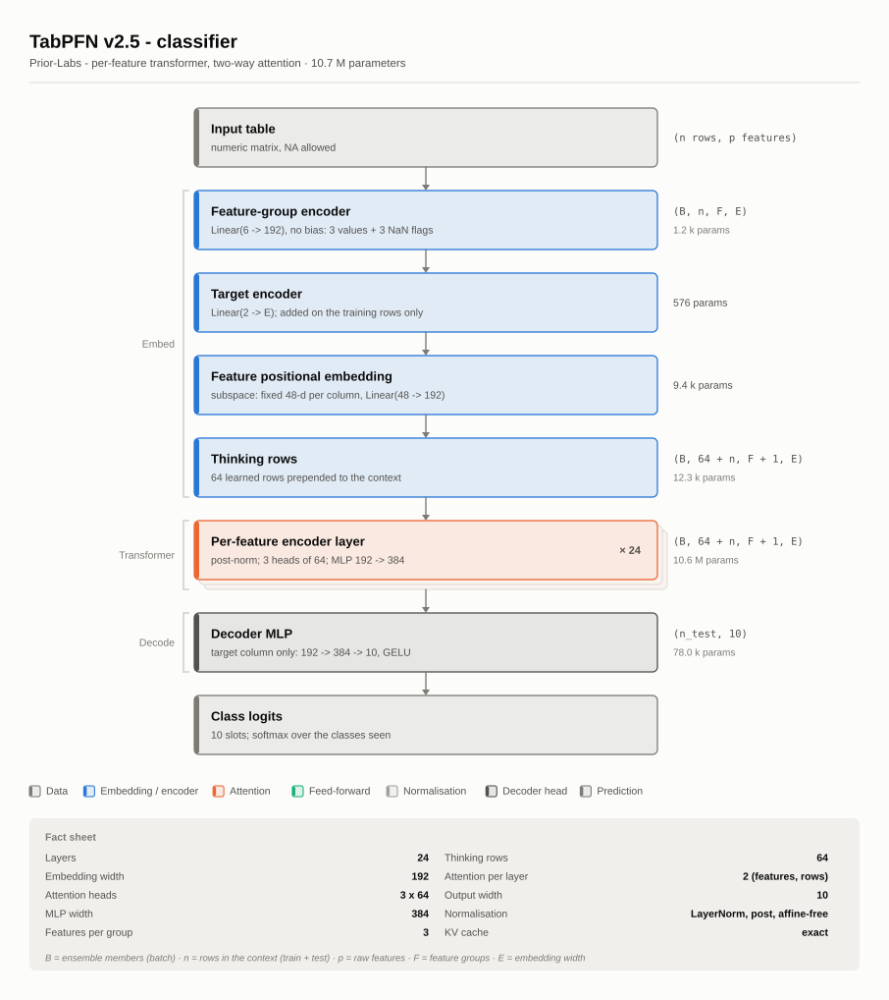
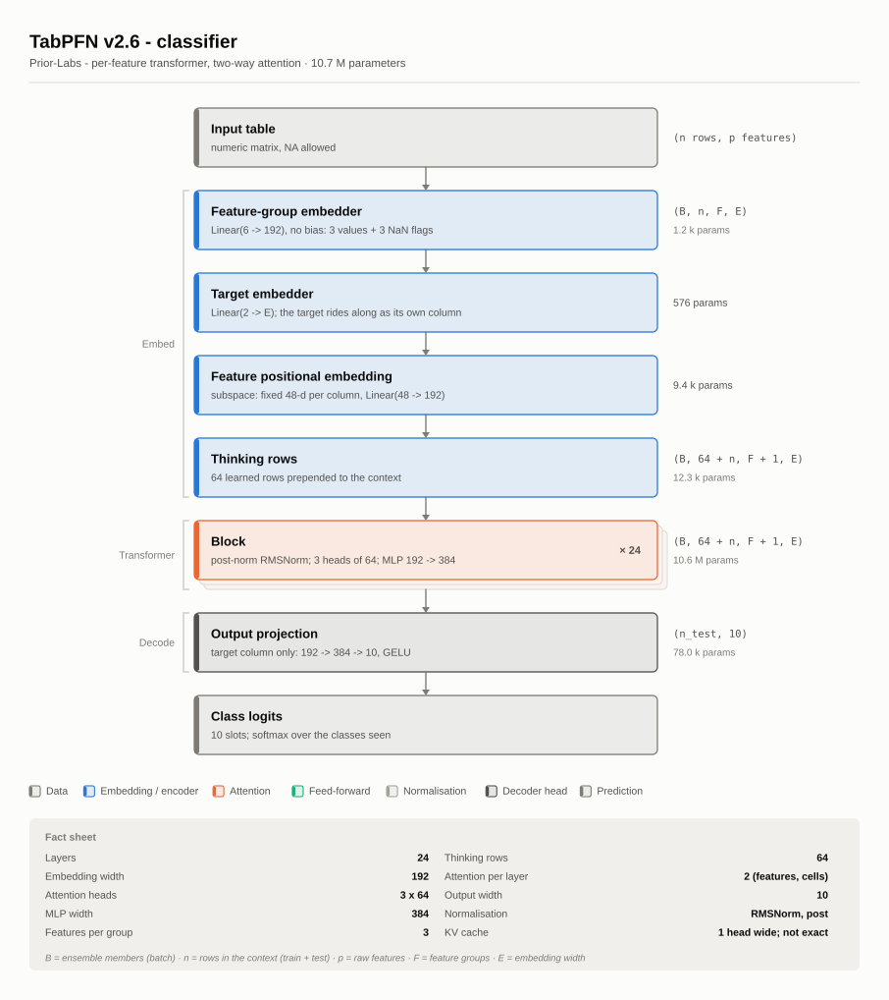
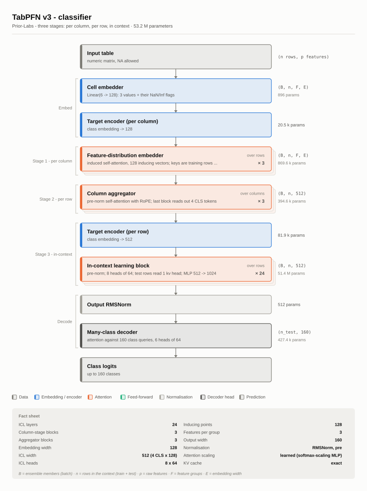
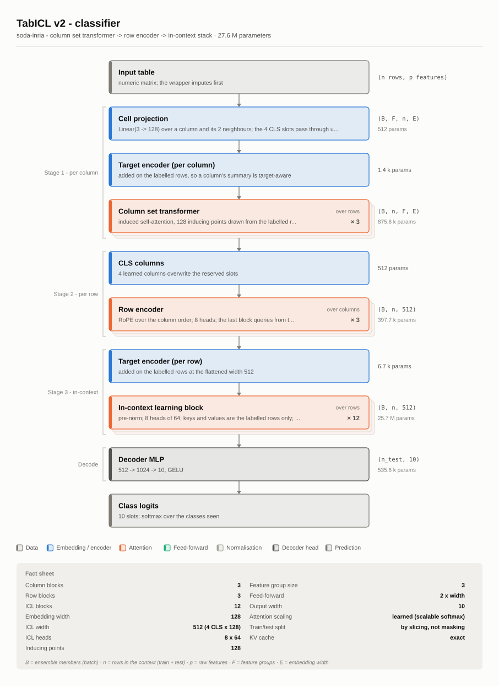
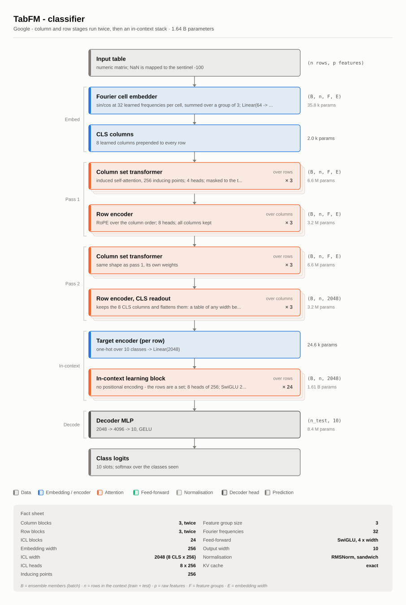
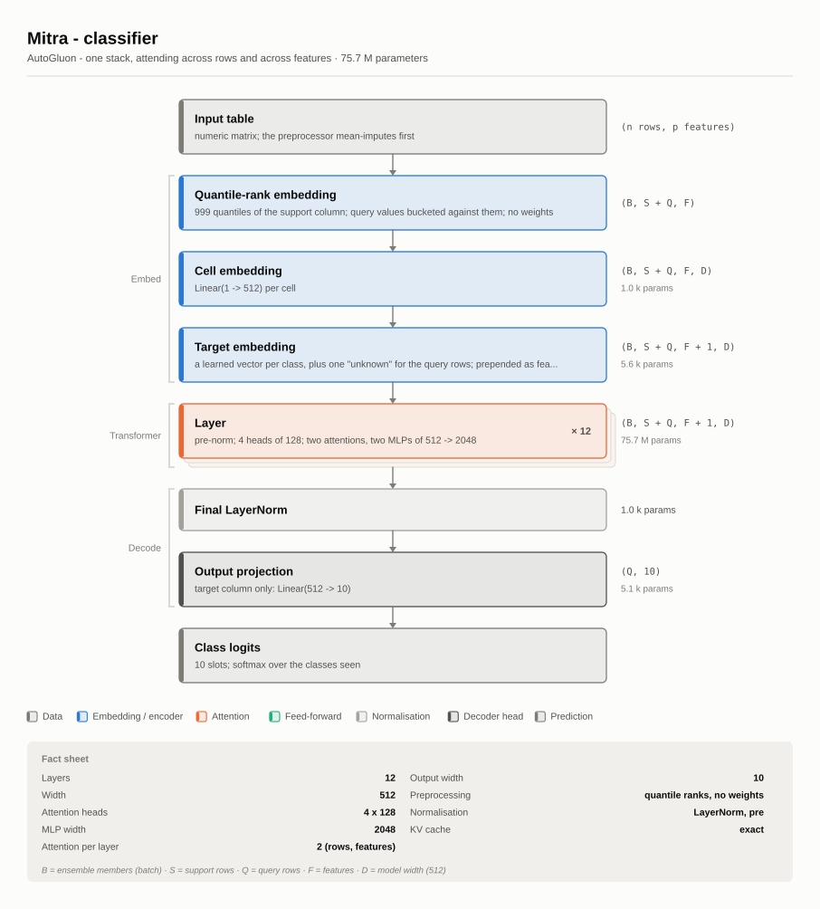
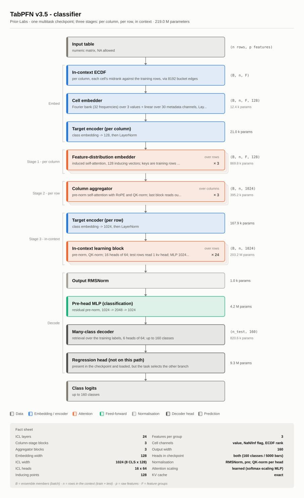
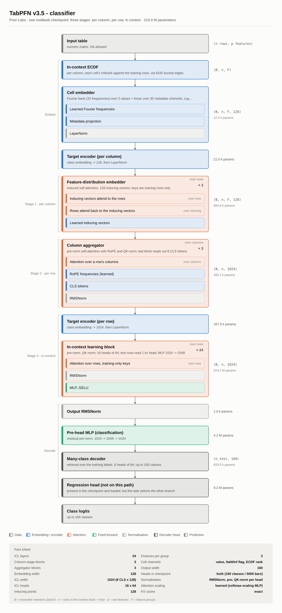

Every diagram below was produced by plot_architecture() from a loaded model — not drawn by hand and not transcribed from a paper. The stages come from the backend’s own description of its network; the widths, head counts and parameter totals are read off the network that was built from the published checkpoint’s config.json.
The layout owes its shape to Sebastian Raschka’s LLM architecture gallery: blocks stacked in the order they run, repeated blocks drawn once with their repeat count, a fact sheet underneath. What is different here is the thing that makes a tabular foundation model a tabular foundation model, and which a language model has no equivalent of: an attention layer has an axis. It can run down a column, across a row’s features, or over the rows of the table. Each attention block carries that axis as a tag, and it is the single most useful thing to compare across the seven.
file = NULL draws on the current graphics device instead, so plot(clf) works the way it does for any other model object. The extension picks the format — .svg, .png or .pdf.
How these particular figures were made
The vignette ships the SVGs rather than building them, because instantiating all seven networks at their published widths allocates about 2 billion parameters and takes a couple of minutes — too much to pay on every R CMD build. The script that made them is inst/gallery/make-gallery.R:
It reads each model’s config.json and builds the network without loading any weights. That is not a shortcut for the numbers: a diagram depends on the config, which fixes the architecture, and on the shapes of the parameters, which the config fixes too. Nothing on these figures depends on the values in the tensors, so a randomly initialised network reports exactly what the trained one does. It is also why the script needs no gigabytes on disk — for TabFM and Mitra it fetches a few hundred bytes of JSON and nothing else.
The three TabPFN generations
The clearest comparison in the gallery, because the three are the same lineage and you can watch the design change.
TabPFN v2.5
One embedding pass, then 24 identical layers that each attend twice — across a row’s feature groups, then down each feature’s column — and a two-layer decoder. The two attentions are the architecture; nothing else in the stack moves information between rows or between columns.

TabPFN v2.5 classifier
TabPFN v2.6
The same two-way shape, restated: RMSNorm instead of an affine-free LayerNorm, no biases anywhere, and the target promoted from a side input to a column of its own that the prediction is read back out of. The whole parameter difference is those norms — v2.5’s LayerNorms have nothing to learn, v2.6’s three RMSNorms per block have 192 weights each, and 24 × 3 × 192 = 13,824 is exactly the gap between 10,718,218 and 10,732,042.

TabPFN v2.6 classifier
TabPFN v3
v3 gives up the single stack that attends both ways and splits the work into three: summarise each column’s distribution over the rows, aggregate a row’s columns into a fixed-width vector, then run a deep in-context stack over rows at that wider width. Note where the parameters went — 51.4 M of 53.2 M sit in stage 3, at a width of 512 rather than 128, because the column aggregator reads out four CLS tokens and 4 × 128 = 512.

TabPFN v3 classifier
The other three architectures
TabICL v2
Structurally a cousin of TabPFN v3 — column stage, row stage, in-context stage — arrived at independently, and different in every detail: affine LayerNorm, a packed q/k/v projection, a scalable softmax on the length-varying attentions. Its distinctive choice is that the labelled rows are held apart from the test rows by slicing, never by masking: a labelled row cannot see a test row at any stage, which is what makes its KV cache exact.

TabICL v2 classifier
TabFM
TabFM alternates: summarise the columns, mix the row, summarise the columns again, mix the row again, then learn in context. Running each stage twice is what separates it from TabICL’s single pass, and the second row stage is the one that collapses a table of any width to a fixed 2048 numbers. It is by far the largest model here at 1.64 B parameters — an ICL width of 2048 and a 4× SwiGLU feed-forward across 24 blocks accounts for nearly all of it.

TabFM classifier
Mitra
The flattest of the seven. No column stage, no row stage, no in-context stage — one stack of twelve identical layers, each attending across rows and then across features, with an MLP after each. The target is feature column 1, and the input transform is a fixed quantile-rank mapping with no weights at all, which is why the first block on the diagram reports no parameter count.

Mitra classifier
Opening a block up
detail = "full" expands each repeated stack into its sublayers, in the order they run. This is where the axis tags earn their keep: TabPFN v3’s column stage attends over rows, its aggregator over columns, and its ICL stack over rows again, all visible at once.
The same three stages as v3, with two visible changes. The cell embedder is no longer a linear: a learned Fourier bank reads each value, and a second projection reads its in-context ECDF rank – where that cell sits in its own column’s distribution over the training rows – so a column’s scale is accounted for before stage 1 begins. And the decoder carries both heads, because one checkpoint serves both tasks; the diagram draws the one the task selects and names the other as carried but not run.

TabPFN v3.5 classifier

TabPFN v3.5, sublayers expanded
Themes
Both themes are stepped for their own surface rather than one being an inversion of the other.
Colour carries three identities — embedding, attention, feed-forward — and everything else is neutral. That is a deliberate ceiling: with a diagram whose blocks are read against each other rather than in sequence, only three hues from the reference categorical palette clear the colour-vision-deficiency separation floors. Every block is also labelled in words and listed in the legend, so nothing is carried by colour alone.
The description behind the picture
The figure is one rendering of a structured object, and the object is useful on its own:
arch <-tabfound_architecture(clf)arch # the same information as textas.data.frame(arch) # one row per stageas.data.frame(arch, detail ="full") # sublayers too
For the v3 classifier above, dropping the parent, detail and shape columns to fit the page:
Each stage declares which parameter-name prefixes it owns, which is how the counts are exact and how the descriptions are kept honest: the package’s tests assert, for every backend, that each parameter in the network is claimed by exactly one stage. A backend that grows a submodule fails that test until its description grows one too — so a diagram cannot quietly drift from the model it claims to describe.
Adding a backend
A backend supplies its stage list through the registry, so a new model becomes drawable with the same one call that registers it:
describe returns a title, a subtitle, a named facts vector and a list of arch_stage()s. Everything else — layout, the three formats, both themes, the parameter accounting — is shared.